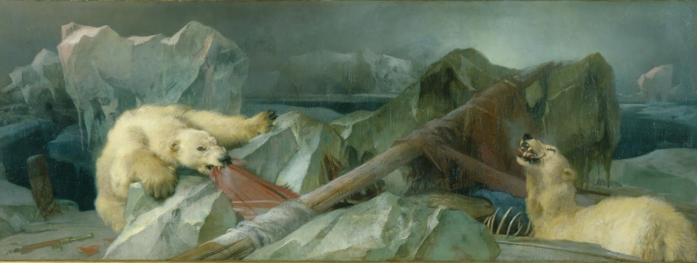

Carnet fictif d’une personne trouvant une photo maudite. j’y ai créé une narration illustrée a partir d’une seule image (que j’ai décliné en plusieurs versions). La construction de légende autour d’une image ou un objet trouvé m’a été inspiré par le “found footage” et l’histoire étrange derrière la peinture “Man proposes, god disposes” de Edwin Landseer
Référence(s)

Landseer, Man proposes, god disposes, 1864 Cette peinture est inspirée d'une éxpedition perdue dans l'artique. On y voit les restes du bateau et de ses passagers, dévorés par des ours polaires. Elle est exposé a l'université de londres, où elle a fait l'objet d'une etrange rumeur : la peinture serai en fait maudite et tout ceux qui s'assoient devant durant un examen seraient condamnés à le rater. La rumeur prennant de plus en plus d'ampleur parmis les etudiants, les professeurs ont mis une "mesure de securité" : recouvrir le tableau avec le drapeau anglais pendant les examens.